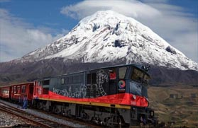
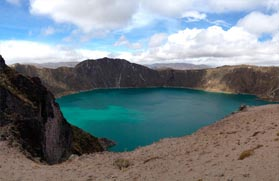
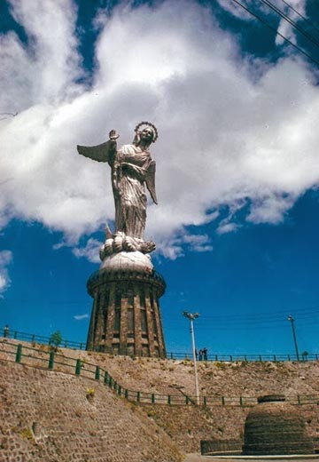
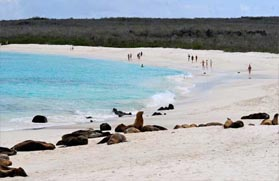
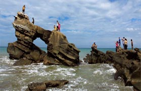

Las islas Galápagos (también islas de los Galápagos y oficialmente archipiélago de Colón o archipiélago de Galápagos) constituyen un archipiélago del océano Pacífico ubicado a 972 km de la costa de Ecuador. Está conformado por trece islas grandes con una superficie mayor a 10 km², seis islas medianas con una superficie de 1 km² a 10 km² y otros 215 islotes de tamaño pequeño, además de promontorios rocosos de pocos metros cuadrados, distribuidos alrededor de la línea del ecuador terrestre, que conjuntamente con el Archipiélago Malayo, son los únicos archipiélagos del planeta que tienen tierras tanto en el hemisferio norte como en el hemisferio sur. Las islas Galápagos fueron declaradas Patrimonio de la Humanidad en 1978 por la Unesco. El archipiélago tiene como mayor fuente de ingresos el turismo y recibe 200 000 turistas al año. También se ha desarrollado el turismo ecológico con el fin de preservar las especies. La región fue el hábitat del Solitario George, el último espécimen de la especie tortuga gigante de Pinta, extinta el 24 de junio del 2012. Las islas también son hábitat de especies como tortugas marinas, delfines, tiburones, tiburones martillo, ballenas, arrecifes de coral, fragatas, iguanas, lagartos, cormoranes, albatros, leones marinos y pingüinos. Al igual que la masa continental de Ecuador, el archipiélago es atravesado por la línea ecuatorial, en su mayor parte por el norte de la isla Isabela. Galápagos es el segundo archipiélago con mayor actividad volcánica del planeta, superado únicamente por Hawái. Entra en la categoría de los puntos calientes; los volcanes más activos son Cerro Azul, Sierra Negra, Marchena y volcán La Cumbre en la Isla Fernandina, que es el más activo del archipiélago y uno de los más activos del mundo. Las Galápagos son conocidas por sus numerosas especies endémicas y por los estudios de Charles Darwin que le llevaron a establecer su teoría de la evolución por la selección natural. Son llamadas, turísticamente, las Islas Encantadas, denominación que se ganó el archipiélago en el siglo XVI por su grandiosa biodiversidad de flora y fauna, heredando el nombre por generaciones.
Magister en Docencia Universitaria en Ciencias de la Ingeniería, Abogado -Ciencias jurídicas, Investigador de Accidentes, de Tránsito (13 años de experiencia). Planificación y proyectos (8 años de experiencia). Ejercer docencia en materias técnicas, tales como: matemática, multimedia básica aplicada al ámbito forense, COIP, Tránsito, Liderazgo y desarrollador de planes de clase y syllabus aplicadas a elaboración de Peritajes. Utilización de aplicativos (software o en línea) para elaboración de informes periciales en cualquier campo, que contribuyen a la celeridad del proceso de entrega de Peritajes a la Autoridad Competente.